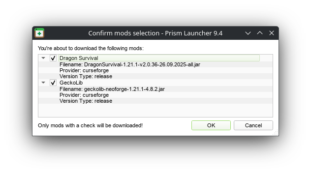

Hewwo! 🪶🎵
This guide will help you install the Dragon Survival mod needed to play on my minecwaf server :3
If you already know what you're doing, then feel free to follow the instructions on the Dragon Survival Wiki. Check my mod list to make sure you get the right versions of everything.
Installation
First of all, I highly recommend using
Prism Launcher as an alternative to
the default Minecraft launcher
for managing mods. Among other features, Prism Launcher makes it
significantly easier to install, update, and downgrade mods, and can keep
your modded instances completely separate from your vanilla one, so you
don't risk corrupting your regular save files.
Not that corrupting your worlds with dragons would be the wooorst thing
ever.. >:)
In terms of security, Prism Launcher is open-source, and, i mean, they say they're not a virus, so like, that's good. You will need to log into it, but you can revoke the app's access to your Minecraft account at any time under the "App Access" area here. You can read more about the launcher on their FAQ.
Prism Launcher
Download the latest version of Prism Launcher and install it. When you open it for the first time, you should see a window prompting you to choose your language, then to sign into your Microsoft account.
Once you've signed in, you should see a window that looks something like this. Click on "Add Instance" in the top left.
You should see something like this. If you just want to play regular Minecraft, then you're done! But you wanna play with dragons, right??
On this screen, make sure to:
- Give it a descriptive name.
- Set the Minecraft version to
1.21.1. - Check the NeoForge Mod Loader option near the bottom right, and choose the latest version
(
21.1.212at the time of writing).
You should see your new instance. Right click on it, and select Edit...
Click on mods, then click on Download mods.
Click on CurseForge, then search for Dragon Survival.
Find the mod just called "Dragon Survival", by BlackAuresArt. You might
have to scroll down to find it. It's the one with this cool dragon art!
Select version DragonSurvival-1.21.1-v2.0.37-21.10.2025-all.jar,
then click on Select mod for download.
Now search for GeckoLib, select it, and choose the latest
version (geckolib-neoforge-1.21.1-4.8.2.jar at the time
of writing). Click on Select mod for download.
That's all that's required to play on the server! But you can install extra mods if you want, as long as they're compatible with the dragon stuff. See the next section for some recommendations.
When you're done adding mods, click Review and confirm at the very bottom. Make sure you have everything you want, then click OK.
Close out of the windows until you're back to the main menu, then double-click on your Dragon Survival instance to launch the game!
The game will take a few minutes to launch the first time, as it's downloading everything.
You're done! Click Multiplayer and connect to the server with the connection info I've given you! The server uses a whitelist, so make sure I have your username. You can check it in the top-right corner of the Prism Launcher window.
Complete Mod List
Here are some additional mods that I recommend downloading. They can be obtained the same way as the others, in the "Mods" section of your instance's console window. Screenshot is for reference, see the actual version numbers in the table below.
If you're here because I linked you from the top of the page, also make sure you're running Minecraft 1.21.1 and have these versions of Dragon Survival and GeckoLib.
| Mod | Version | What it does |
|---|---|---|
| Cubes Without Borders | Latest, or cwb-neoforge-3.0.0+mc1.21.jar |
Implements borderless fullscreen, which the vanilla game lacks. |
| Distant Horizons | Latest, hopefully newer than DistantHorizons-2.3.6-b-1.21.1-fabric-neoforge.jar |
Adds low-LOD rendering to faraway blocks, letting you see really far without tanking your performance much at all. Compatible with lots of shaders, too. |
| Dragon Survival | DragonSurvival-1.21.1-v2.0.37-21.10.2025-all.jar |
Dwagons! |
| Geckolib | Latest, or geckolib-neoforge-1.21.1-4.8.2.jar |
Required by Dragon Survival. |
| Iris | Latest, or iris-neoforge-1.8.12+mc1.21.1.jar |
Implements shaders, letting you install shader packs to make the game look pretty. See below. |
| Lithium | lithium-neoforge-0.15.0+mc1.21.1.jarnewer might be OK. |
Game engine performance optimizations. |
| Sodium | Latest, or sodium-neoforge-0.6.13+mc1.21.1.jar |
Rendering performance optimizations. |
| Sodium Extra | Latest, or sodium-extra-neoforge-0.6.0+mc1.21.1.jar |
Adds extra visual settings, like showing FPS, disabling animations, or modifying fog/clouds. |
| Xaero's Minimap | Xaeros_Minimap_25.2.10_NeoForge_1.21.jarnewer might be OK. |
Adds a minimap to the game, highly configurable. Kinda overpowered, but c'est la vie since the official in-game maps are so unbelievably terrible 😔. |
Note about Distant Horizons: for whatever reason, the latest (as of writing) version has some kind of bug where it sometimes crashes on launch with an error like this. IDK what causes it, but restarting the game a few times fixes it. Hopefully the mod updates to fix it, because I really really recommend it, even if you have to put up with some jank like this:
Shaders
Shaders are graphical mods that completely change how the game is rendered, often adding stuff like realtime lighting, shadows, and other eye candy. Prism Launcher can manage shaders for you, or you can install them manually by searching the web for "Minecraft shaders" and following their installation instructions.
You must have the Sodium and Iris mods
installed in order to use shaders!!
Click on Shader packs on the left, then Download shaders on the right.
Search for whatever you like, and download whatever you want. Shaders have
their own compatibilty quirks, but generally work with most mods. If you're
using Distant Horizons, make sure your shader is on this
compatibility list
(or otherwise indicates that it is compatible with DH).
My go-to shader pack is BSL Shaders. I find it has a good balance
between performance and quality, and it looks nice without looking too drastically different
from the vanilla Minecraft vibe. It also supports Distant Horizons.
Select your shader, then click Select shader pack for download, then click Review and confirm. You will see a confirmation window similar to the one for installing mods. Click OK.
Updating Mods
To update your mods, right click on your Dragon Survival instance and select Edit....
Then click on Check for Updates on the right.

You should see a window showing all available mod updates. The launcher usually does a good job of making sure that the new updates will be compatible, with everything else but it's good to double-check what it's doing before clicking OK.
Have fun! :3